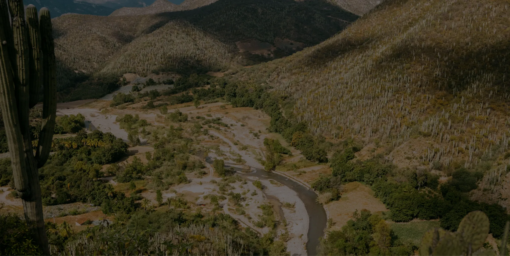
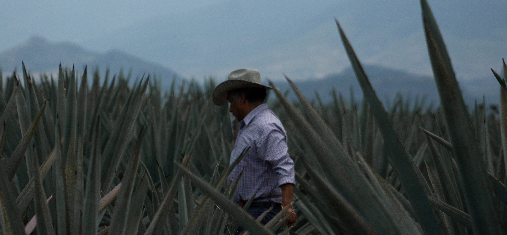
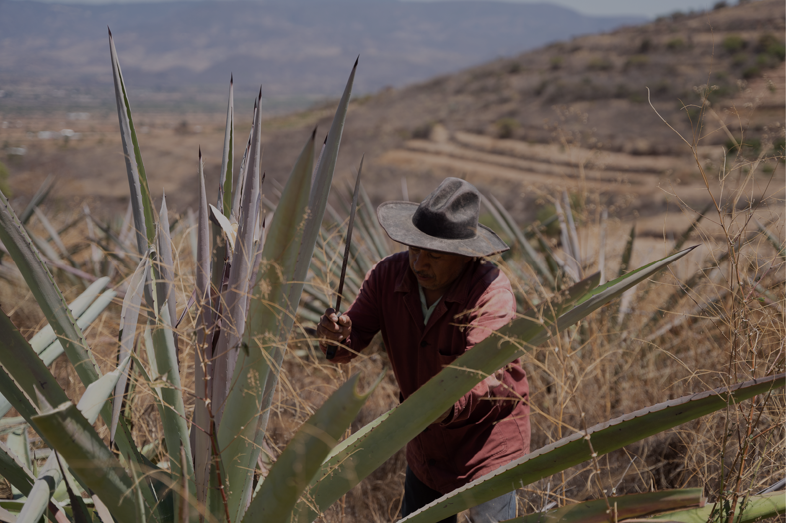
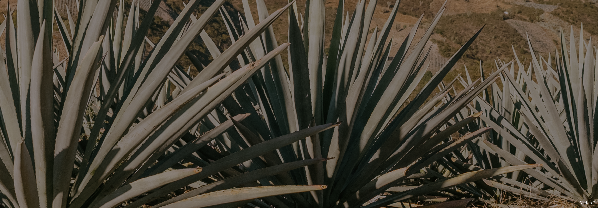
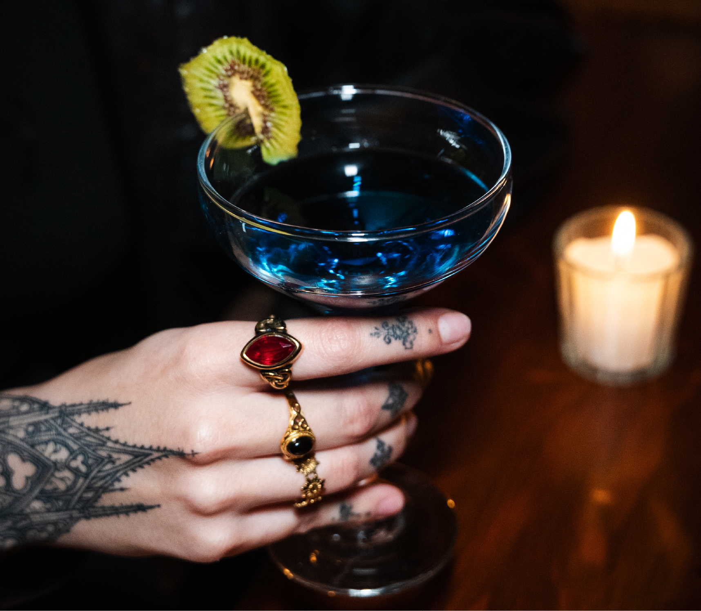
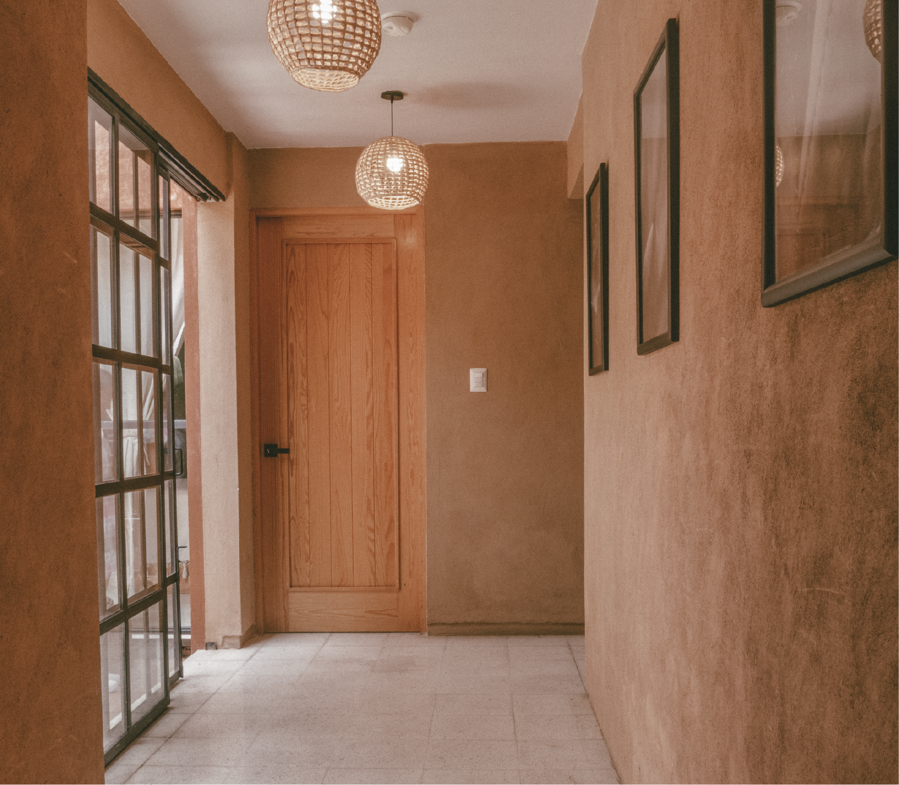

Nuestra esencia en el mundo
Hoy Casa Cortés comparte la riqueza del mezcal oaxaqueño en diversos países, llevando consigo la tradición, el conocimiento y el trabajo de las comunidades que hacen posible cada botella.

Bienvenido a Casa Cortés
Este sitio contiene información sobre bebidas alcohólicas. Para continuar, confirma que eres mayor de edad.
Disfruta responsablemente.

↓Toda historia tiene un origen. La nuestra comenzó en Matatlán, Oaxaca, donde el conocimiento, la tierra y el tiempo han sido parte de una misma tradición durante generaciones.



Casa Cortés nació en 2008 para honrar la memoria, el conocimiento y el legado de una familia cuya relación con el mezcal se ha construido a lo largo de casi dos siglos.
Inspirados por nuestras raíces zapotecas y guiados por un profundo respeto por el origen, preservamos una tradición que continúa viva en cada comunidad, en cada palenque y en cada botella.
Lo que comienza en la tierra encuentra su expresión en mezcales que llevan el espíritu de Oaxaca.
Más allá de cada botella, Casa Cortés crea espacios que invitan a descubrir el mezcal desde una nueva perspectiva.

Un espacio donde el mezcal cobra vida a través de catas, coctelería de autor y una cuidada selección de destilados artesanales.
Descubrir más
Hospédate en el corazón de Oaxaca, en un espacio diseñado para brindar comodidad, descanso y una experiencia auténtica.
Descubrir más